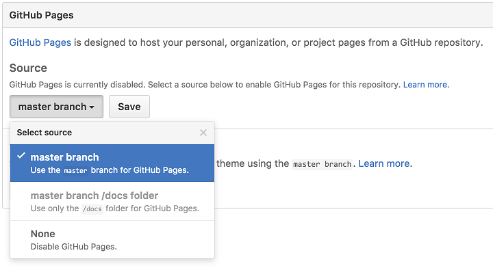
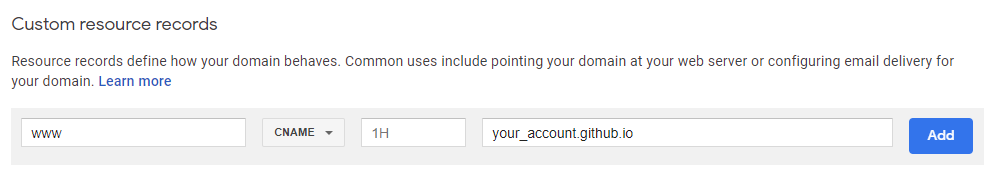
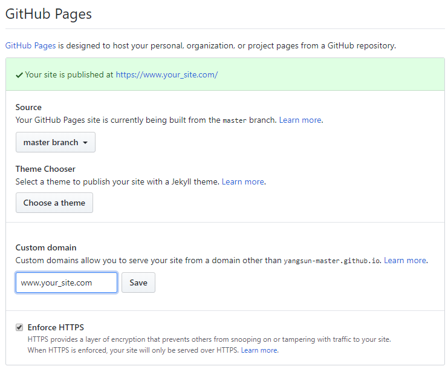

How to create a blog
I plan to have my personal blog. Here’s the ideas:
- The blog is a technique blog, it contains code.
- I like source control, so I can easily know what change I made.
- I don’t want to start from scratch. But I want to highly customize my blog.
- I want my personal domain.
This is my solution: Markdown + Hexo + Github Pages + Custom domain
Let’s start!
Prepare git repo
Get a Github account.
Create two repo
One is for blog source code, the other is for the blog website. Github create a repo
On your local box, clone your repo.
Create two folders blog-src, blog-website. And run git clone accordingly.
git clone https://github.com/<your_account>/<your_repo>.git
Create a local blog web site
Install git
Install Nodejs
Install Hexo
npm install -g hexo-cli
npm install hexo
Initialize the blog source code folder.
Under the folder blog-src, run the command.
hexo init
Run npm to install packages.
npm install
Create your first post.
hexo new post hello-world
The file hello-world.md will be created under _posts folder. The folder structure:
.
+-- scaffolds
+-- source
| +-- _posts
| +-- hello-world.md
+-- themes
+-- _config.yml
Generate the web site static files.
hexo generate
The public folder contains the files. Now, we’re ready to publish the web site.
public
+-- 2019
| +-- 08
| +-- 20
| +-- hello-world
| +-- index.html
+-- archives
+-- css
+-- js
+-- index.html
Run locally
hexo server
Open browser with http://localhost:4000, see how the blog looks like.
INFO Start processing
INFO Hexo is running at http://localhost:4000 . Press Ctrl+C to stop.
Publish to Github
Publish to the blog website repo.
Copy all the files under public folder to the blog-website folder, then commit and push.
Enable Github Pages.
Click on the Settings tab and scroll down to the GitHub Pages section. Select master branch and click Save.

The Github pages should be ready to go. http://YOUR_ACCOUNT.github.io/blog_website
Custom domain
Create a CNAME in your DNS provider, config www mapping to YOUR_ACCOUNT.github.io

Back to Github settings, type the your domain in the Custom domain of Github Pages. Click Save. Check Enforce HTTPS.

Wait for a minute, your domain should be ready to go.
Done!
Next Customize Hexo blog